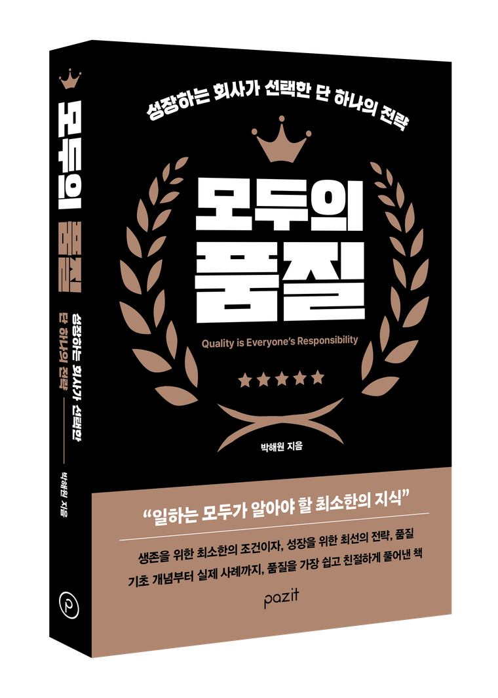

성장하는 회사가 선택한 단 하나의 전략
Quality is Everyone's Responsibility
★★★★★

About the Book
"일하는 모두가 알아야 할
최소한의 지식"
생존을 위한 최소한의 조건이자, 성장을 위한 최선의 전략, 품질.
기초 개념부터 실제 사례까지, 품질을 가장 쉽고 친절하게 풀어낸 책입니다.
"품질이란 고객의 명시적 요구사항과 묵시적 기대수준을
지속적으로 충족시키는 조직의 능력이다"
Recommendation
30년 현장 경영자가 이 책을 읽고 보내온 글입니다.
30년 넘는 세월을 생산과 품질의 현장에서 일해온 사람으로서, 품질을 다룬 책은 늘 반가우면서도 아쉬웠다. 대부분 이론에 머물거나, 현장의 사정과는 동떨어져 있었기 때문이다. 이 책은 달랐다. 페이지마다 내가 겪어온 현장이 있었고, 그 시절 명쾌하게 설명하지 못했던 문제들의 답이 있었다.
이 책은 품질을 줄여야 할 비용이 아니라 수익을 만드는 자산으로 다시 세운다. 눈앞의 원가를 아끼려다 신뢰 하락과 재작업, 클레임이라는 더 큰 실패 비용을 치르게 되는 구조를 이토록 선명하게 보여주는 책은 드물다. 부서마다 각자의 지표만 완벽히 달성하는 부분 최적화가 오히려 회사 전체의 성과를 망칠 수 있다는 지적, 품질은 수주하는 순간부터 협력사를 선정하는 과정까지 조직 전체의 합(合)으로 완성된다는 통찰은, 현장에서 잔뼈가 굵은 사람일수록 뼈아프게 공감할 것이다.
특히 오래 마음에 남는 것은 사람을 보는 저자의 시선이다. 불량이 발생하면 작업자의 부주의를 탓하고 정신 교육으로 덮으려는 관행을 현장에서 수없이 보아왔다. 이 책은 인간은 실수할 수밖에 없는 존재임을 인정하는 데서 출발해, 실수가 불량으로 이어지지 않게 막는 시스템이 먼저라고 말한다. 문제가 발생했을 때 "누구 책임이냐"를 묻는 경영자와 "시스템의 근본 원인이 무엇이냐"를 묻는 경영자, 그 첫 질문의 차이가 조직이 문제를 은폐할지 정직하게 개선할지를 가른다는 대목에서는 오래 책장을 덮지 못했다.
AI가 현장에 들어오는 시대에도, 무엇이 좋은 품질인지 판단하고 책임지는 일은 결국 사람의 몫이라는 저자의 결론에 깊이 동의한다. 품질은 어쩌다 한 번 잘 만드는 운이 아니라, 흔들리지 않는 시스템과 올바른 경영 철학으로 한결같이 기대를 충족해 내는 일관성 그 자체다. 품질을 업으로 삼은 사람만이 아니라, 조직을 이끄는 리더와 모든 구성원에게 이 책을 권한다.
현문현답(現問現答)
모든 문제는 현장에 있으며,
그 해답 또한 현장에 있다.한국엔에스케이 성영환 전무
현장의 경영자·실무자들의 극찬 중에서
Contents
5개 PART, 40개 챕터. 품질의 본질에서 경영까지 한 권으로 담았습니다.
Serial
품질과 성장에 대한
137편의 기록
《모두의 품질》이 나오기까지, 현장에서 쓰고 다듬어 온 생각들을 다섯 갈래로 정리했습니다.
고객고객에게 품질품질의 판단 기준 성장과 태도더하기 보다 더 큰 빼기 리더와 경영존경받는 리더 전체 글 보기 →